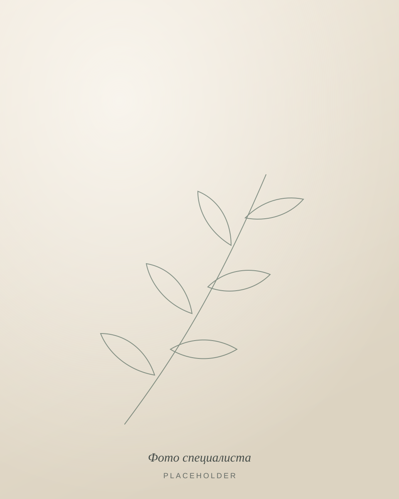

Врач-психиатр, психотерапевт
Имя Отчество
Фамилия
Помогаю взрослым разобраться в том, что происходит с настроением, сном и уровнем тревоги, и вместе выбрать подходящий способ помощи — спокойно, конфиденциально и без осуждения.
- Очно Город, район / метро
- Онлайн видеосвязь, из любого региона
- Первичный приём 0 000 ₽, 00 мин

- Врачебная тайна
- Без осуждения и давления
- Решения — совместно
- Открытые цены
01О специалисте
Врач, который сначала слушает
Меня зовут Имя Отчество. Я врач-психиатр и психотерапевт. Здесь — 2–3 предложения о том, с кем вы работаете и почему выбрали эту специальность.
Абзац о профессиональном пути: где учились, где работали, какой опыт сейчас наиболее важен для пациентов. Только подтверждённые факты — без общих рекламных формулировок.
Абзац о том, как устроена работа: сочетание медицинской оценки и психотерапии, внимание к образу жизни, сотрудничество с другими специалистами при необходимости.
- Образование
- Название вуза, факультет, год окончания
- Специализация
- Ординатура / переподготовка по психиатрии, психотерапии — учреждение, год
- Аккредитация
- Специальности и сроки действия свидетельства об аккредитации
- Опыт
- Места работы и годы — только подтверждённые
- Методы
- Методы, которыми врач владеет и в которых обучен · подробнее
- Сообщества
- Профессиональные ассоциации — если есть
Профессиональный путь
- 20XX — н. в. Частная практика: психиатрия и психотерапия
- 20XX — 20XX Должность, медицинская организация
- 20XX — 20XX Ординатура по специальности «Психиатрия», учреждение
02С чем можно обратиться
Когда стоит поговорить со специалистом
Не обязательно знать, «как это называется». Достаточно замечать, что состояние мешает жить так, как хочется. Ниже — частые поводы для обращения; это не диагнозы и не самодиагностика.
-
01
Тревога и беспокойство
Постоянное напряжение, тревожные мысли, которые сложно остановить, телесные ощущения тревоги.
-
02
Сниженное настроение
Когда долго нет сил и интереса, привычные дела даются с трудом, а радость будто приглушена.
-
03
Стресс и истощение
Усталость, которая не проходит после отдыха, раздражительность, ощущение, что ресурс закончился.
-
04
Нарушения сна
Трудно уснуть, частые пробуждения, ранние подъёмы или сон, после которого нет ощущения отдыха.
-
05
Жизненные перемены
Переезд, развод, утрата, смена работы, рождение ребёнка — периоды, когда привычные опоры не работают.
-
06
Приступы паники
Внезапные эпизоды сильного страха с сердцебиением, нехваткой воздуха, ощущением потери контроля.
-
07
Навязчивые мысли и действия
Повторяющиеся мысли или ритуалы, от которых трудно отказаться, даже когда понимаешь их избыточность.
-
08
Второе мнение и сопровождение лечения
Обсуждение уже назначенной терапии, вопросов о препаратах и дальнейшего плана помощи.
Если вы сомневаетесь, нужно ли обращаться
Поводом для консультации может быть не только «серьёзная проблема». Обратиться имеет смысл, если состояние длится неделями, влияет на работу, сон, отношения или вы просто хотите понять, что с вами происходит. Первая встреча ни к чему не обязывает: её задача — разобраться в ситуации и обсудить варианты.
Психиатр, психотерапевт, психолог — в чём разница
- Психиатр
- врач: проводит медицинскую оценку состояния, при необходимости может назначить лечение, в том числе лекарственное.
- Психотерапевт
- в России — врач-психиатр с дополнительной подготовкой, который проводит психотерапию.
- Психолог
- специалист с психологическим образованием, не врач; не ставит диагнозы и не назначает препараты.
03Форматы консультаций
Выберите удобный формат
Если не уверены, с чего начать, — начните с первичной консультации. Дальнейший формат вы определите вместе с врачом.
-
Первичная консультация
Знакомство, подробный разговор о вашем запросе и состоянии, обсуждение возможных вариантов помощи.
-
Повторная консультация
Обсуждение изменений, оценка того, что помогает, при необходимости — корректировка плана.
-
Психотерапевтическая сессия
Регулярные встречи для работы с запросом. Частота и продолжительность курса обсуждаются индивидуально.
-
Онлайн-консультация
Встреча по видеосвязи из спокойного места, где вас не услышат. Подходит, если очный приём неудобен.
04Как проходит приём
Пять простых шагов
У каждого человека свой путь: количество встреч и дальнейшие шаги зависят от ситуации и всегда обсуждаются вместе.
-
Вы выбираете способ связи
Телефон, мессенджер или почта — как вам спокойнее. Описывать симптомы в сообщении не нужно.
-
Согласуем дату и время
Подбираем удобный слот и формат — очно или онлайн.
-
Вы получаете детали встречи
Адрес или ссылку на видеосвязь, стоимость и что можно взять с собой.
-
Разговор с врачом
Вы рассказываете о своём запросе в своём темпе. Можно говорить о том, о чём готовы.
-
Вместе определяем шаги
Обсуждаем варианты помощи, их плюсы и ограничения. Решение остаётся за вами.
05Подход к работе
Принципы, на которых строится работа
Первая встреча ни к чему не обязывает. Её задача — разобраться, что происходит, и вместе решить, что может помочь.
-
Уважение и отсутствие осуждения
О любых переживаниях можно говорить прямо. Здесь не стыдят, не обесценивают и не торопят.
-
Совместные решения
Варианты помощи обсуждаются открыто: что предлагается, зачем, какие есть альтернативы. Последнее слово — за вами.
-
Внимание к вашей ситуации
Нет универсальных схем. Учитываются образ жизни, ваш опыт, предпочтения и то, что уже пробовали.
-
Конфиденциальность
Всё, что вы рассказываете, составляет врачебную тайну и защищено законом.
Методы работы
- Метод 1 — например, КПТ
- Метод 2
- Метод 3
- Фармакотерапия — при показаниях
06Образование и квалификация
Документы об образовании
Дипломы, сертификаты и удостоверения о повышении квалификации. Нажмите на документ, чтобы открыть скан.
-
Диплом Специальность «Лечебное дело»
-
Ординатура Психиатрия
-
Переподготовка Психотерапия
-
Аккредитация Свидетельство об аккредитации
-
Повышение квалификации Название программы
-
Сертификат Название программы
Сведения о свидетельстве об аккредитации специалиста можно проверить в открытом реестре Минздрава России.
07Стоимость
Цены без мелкого шрифта
Стоимость фиксирована и известна заранее. Оплата — после приёма. Способы оплаты: наличные, карта, перевод.
Записаться на консультацию| Услуга | Длительность | Стоимость |
|---|---|---|
| Первичная консультацияочно или онлайн | 00 мин | 0 000 ₽ |
| Повторная консультацияочно или онлайн | 00 мин | 0 000 ₽ |
| Психотерапевтическая сессия | 00 мин | 0 000 ₽ |
| Онлайн-консультация | 00 мин | 0 000 ₽ |
- Перенести или отменить встречу можно без оплаты, если предупредить не позднее чем за 24 часа.
- Медицинские услуги оказываются на основании договора. Документы для налогового вычета — по запросу.
- Цены актуальны на ДД.ММ.ГГГГ.
08Вопросы
Частые вопросы
Ответы носят общий характер и не заменяют консультацию. Если вашего вопроса нет — просто напишите.
Как подготовиться к первой консультации?
Специальной подготовки не нужно. Если хочется, можно заранее записать, что беспокоит и как давно, какие лекарства вы принимаете и какие обследования проходили. Возьмите с собой медицинские документы, если они есть, и паспорт — он нужен для оформления договора.
Можно ли обратиться, если диагноза ещё нет?
Да. Большинство людей приходят без диагноза — просто потому, что им тяжело или непонятно, что происходит. Разобраться в этом — одна из задач консультации. Направление от другого врача не требуется.
Как проходит онлайн-приём?
Встреча проходит по видеосвязи (платформа). Перед началом найдите тихое место, где вас не услышат, проверьте интернет и камеру. Ссылку вы получите заранее. Некоторые вопросы могут потребовать очной встречи — врач скажет об этом.
Что делать, если я не знаю, с чего начать разговор?
Это нормально и встречается очень часто. Можно начать с того, почему вы решили записаться именно сейчас, или просто сказать, что сложно подобрать слова. Врач будет задавать вопросы и поможет выстроить разговор.
Обязательно ли будут назначены лекарства?
Нет. Решение о лекарственной терапии принимается только после оценки состояния и обсуждается с вами: зачем она может быть нужна, какие есть альтернативы. Вы вправе задать любые вопросы и отказаться.
Как перенести или отменить встречу?
Напишите или позвоните тем же способом, которым записывались. Если предупредить не позднее чем за 24 часа, перенос и отмена бесплатны. Условия при более поздней отмене.
Как организована конфиденциальность?
Сам факт обращения и всё, что вы рассказываете, — врачебная тайна (ст. 13 Федерального закона № 323-ФЗ). Сведения не передаются работодателю, родственникам или третьим лицам без вашего согласия, кроме случаев, прямо предусмотренных законом. Медицинская документация хранится с ограниченным доступом. На сайте нет форм для описания здоровья и сторонней аналитики.
Не поставят ли меня «на учёт»?
Добровольная консультация у частного врача сама по себе не означает какого-либо наблюдения или ограничений. Действующий закон о психиатрической помощи не использует понятие «учёт»; диспансерное наблюдение устанавливается только по определённым медицинским основаниям и в установленном законом порядке. Если этот вопрос вас тревожит, задайте его на первой встрече — врач ответит подробно.
09Запись
Записаться на консультацию
Напишите или позвоните — согласуем удобные дату, время и формат. В первом сообщении не нужно описывать симптомы: достаточно имени и удобного времени.
- Telegram @username (откроется в новой вкладке)
- WhatsApp +7 (000) 000-00-00 (откроется в новой вкладке)
- Телефон +7 (000) 000-00-00
- Почта hello@example.com
Не знаете, что написать?
Можно скопировать этот текст и отправить в любой мессенджер:
Здравствуйте! Меня зовут ___. Хочу записаться на первичную консультацию. Удобный формат: очно / онлайн. Удобное время: ___.
Очный приём
- Адрес
- Город, улица, дом, кабинет
- Как добраться
- Метро / ориентиры / парковка
- Часы приёма
- Пн–Пт 10:00–20:00, по предварительной записи
- Ответ на сообщения
- в течение рабочего дня